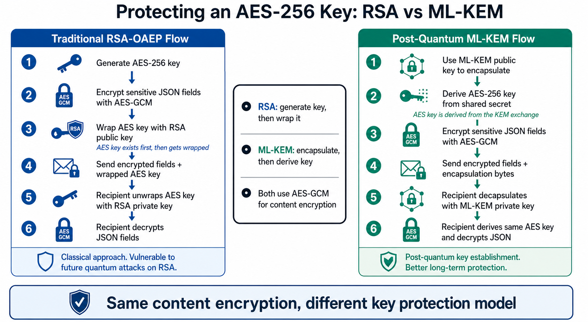

Protect the key that protects the data.
This briefing explains the business and delivery impact of moving from Luna-native RSA key wrapping to Luna-native ML-KEM key establishment, while retaining AES-256-GCM for content encryption. It is written for a project manager who needs enough technical detail to scope work, assess dependencies, and communicate the change accurately.
Most systems already use a two-layer encryption model.
AES-256-GCM encrypts the business content because symmetric encryption is fast and well suited to large amounts of data. The AES key then needs its own protection when it crosses a service, partner, or trust boundary.
That second layer is key wrapping, often called envelope encryption. It is the layer most affected by the move to post-quantum cryptography.
Content protection
AES-256-GCM
Encrypts sensitive JSON fields such as name, address, and card number.
Key protection
RSA or ML-KEM
Protects or establishes the AES key needed to decrypt those fields.

RSA transports a chosen AES key. ML-KEM establishes one.
The concern is long-lived confidentiality, not that AES suddenly becomes obsolete.
Legacy risk
RSA relies on integer factorization. A sufficiently capable quantum computer running Shor's algorithm would threaten that assumption.
Harvest now, decrypt later
An attacker can retain encrypted traffic or wrapped keys today and attempt recovery later if the public-key protection becomes vulnerable.
Post-quantum response
ML-KEM, standardized in FIPS 203, uses different mathematics designed to avoid RSA's factoring-based quantum weakness.
HSM integration changes where key operations run, not the envelope-encryption goal.
The application first has an AES key. In the current Luna comparison, generateDemoAesKey(...) creates it, then the RSA public key wraps it. The RSA private key operation is performed through Luna.
- AES key exists before the RSA operation.
- Wrapped AES bytes are the network transport artifact.
- The RSA private key can remain HSM-resident.
The Luna KEM operation produces two outputs: a secret key and ML-KEM encapsulation bytes. The receiver uses the HSM-backed ML-KEM private key plus those bytes to decapsulate.
- No separately chosen AES key is required for the native KEM flow.
- The encapsulation, not raw key bytes, is sent to the receiver.
- The returned secret key may be provider-backed, depending on the client/provider combination.
What a project needs to decide.
| Decision | Why it matters | Typical answer for this project |
|---|---|---|
| What encrypts the content? | Defines payload performance and compatibility. | Keep AES-256-GCM. |
| How is the AES key protected? | Defines long-term public-key risk. | Move from RSA-OAEP toward ML-KEM; use hybrid migration where required. |
| Where do private keys live? | Defines custody, audit, and operational controls. | Use Luna provider-backed keys when HSM controls are required. |
| Can services consume provider-backed AES keys? | Determines whether data encryption can remain inside the HSM provider boundary. | Validate per provider, JDK, and cipher implementation. |
| What legacy clients remain? | Determines hybrid duration and rollout order. | Inventory RSA consumers before removing legacy key wrapping. |
Stage the migration around evidence, not just algorithms.
Baseline the envelope
Document which fields use AES-GCM, where the AES key travels, and how recipients identify the correct key version.
Prove the Luna RSA path
Validate AES-GCM payload recovery when a standard AES key is wrapped and unwrapped by Luna-native RSA-OAEP operations.
Validate the Luna ML-KEM path
Test Luna-generated keys, private-key residency, provider behavior, and the exact result type returned by native decapsulation.
Plan legacy coexistence
Keep RSA only where legacy consumers still need it, and retire it when recipients can consume the ML-KEM envelope format.
- The receiver can recover the same AES key and decrypt expected fields.
- Private-key operations are demonstrably provider-backed where HSM custody is required.
- Transport fields, key IDs, and algorithm labels are versioned and documented.
- Performance measurements are labeled by Luna-native operation: RSA-OAEP wrapping or ML-KEM encapsulation/decapsulation.
- Provider-backed secret-key handling is tested with the final data-encryption provider.